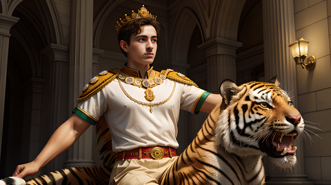

Emperor Rassi
How Rassi overcame the Greeks
Leader of the people
Rassi is known as the greatest army leader in history. He led the Greek war for a hundred thousand years. He fought all the people that faced him. He wanted to ride tigers because tigers are very cool. He played a lot of subway surfaces while riding his tiger. He liked eating cooked rice and chicken. For Rassi, warfare had evolved significantly over the centuries. From bronze and iron to steel and lasers, his military strategies adapted, but the core essence of leadership remained unchanged. In quieter times, Rassi enjoyed playing "Subway Surfers" on a device that had long outlived its original designers. It was a curious juxtaposition— a warrior of ancient times engaged in a game born from a world he had long surpassed
The passing of Rassi
After conquering Mexico, he went on to visit Peru. But he was too annoying for the people of Peru, so they drove him out. For some years he was seen as immortal but he died in the year 0 when he fought the great warrior Feli. This was the last annyone saw of Rassi. As Rassi lay on the ground, defeated but unbroken, he looked up to the sky one final time. He thought about Orion, his loyal tiger, who had passed away years before him. He thought about the battles he'd won, the territories he'd conquered, and the lives he'd changed—both for better and for worse. nd then he thought about the simple joys he'd known—the taste of cooked rice and chicken, the thrill of playing "Subway Surfers," the simple pleasures that had made him human. With his final breath, he whispered a goodbye to a world he'd known for an inconceivable stretch of time.